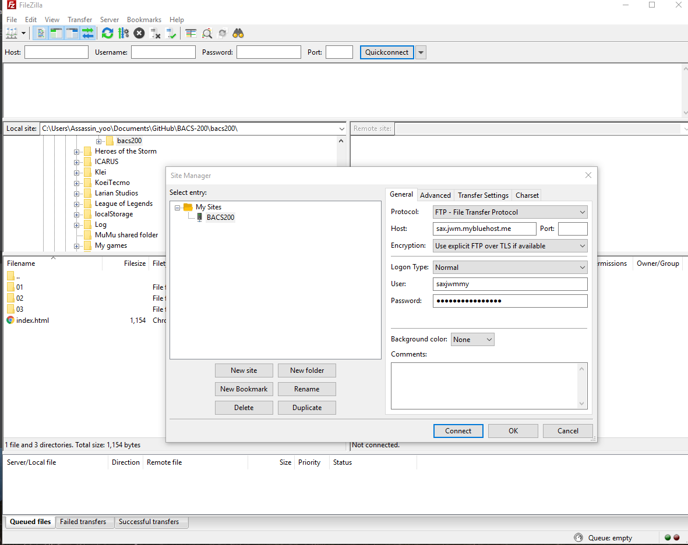
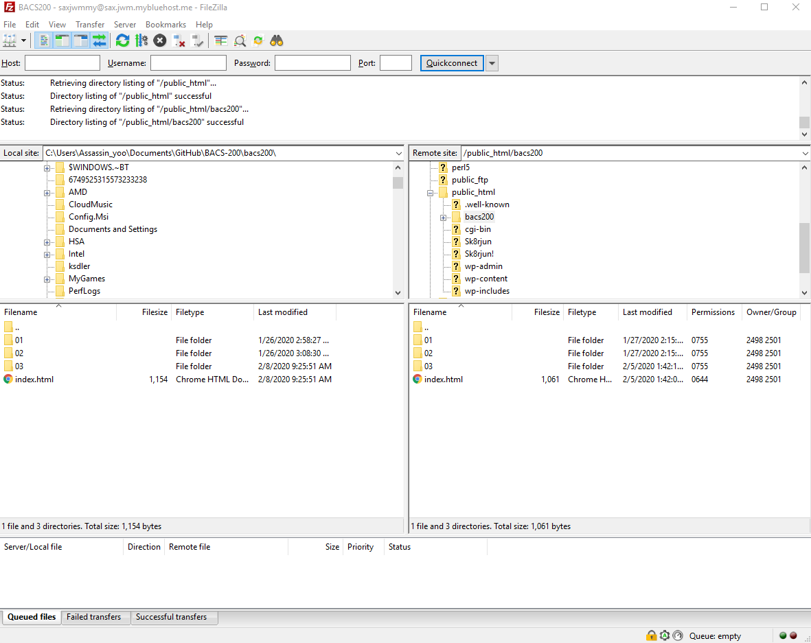
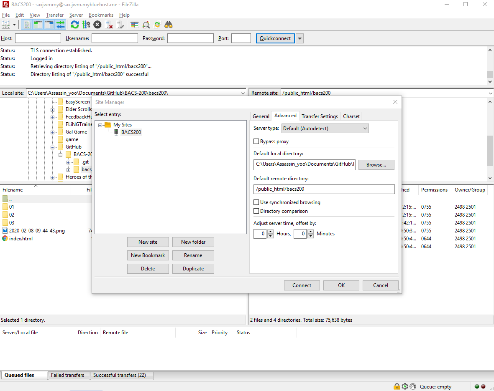
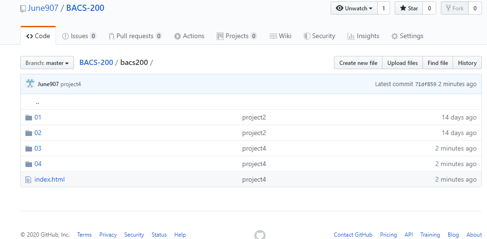
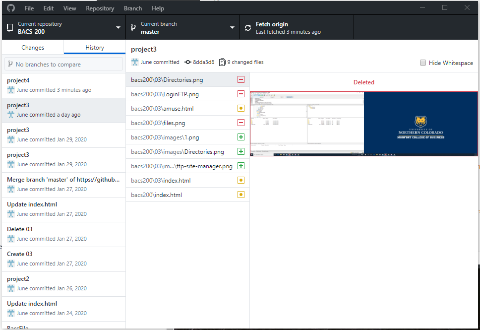
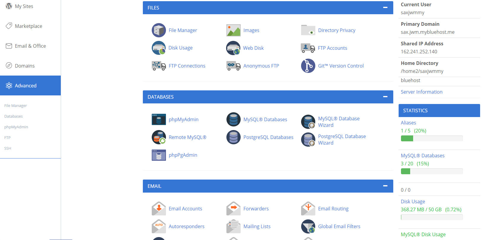
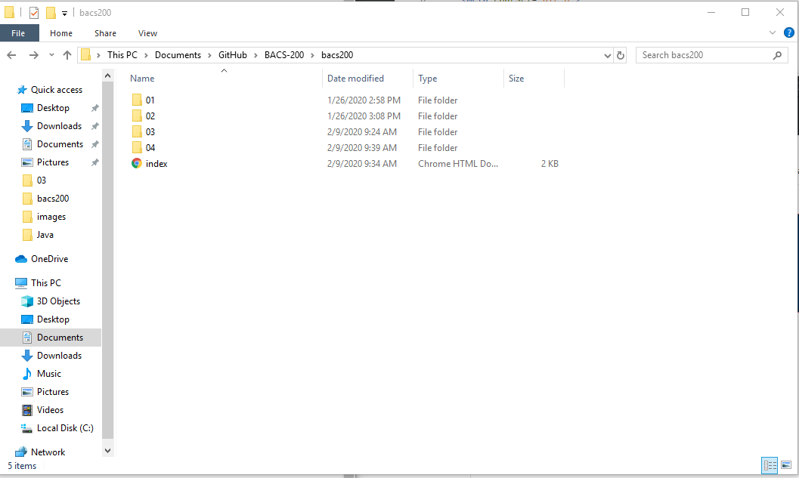
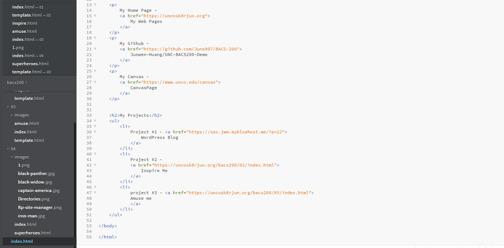
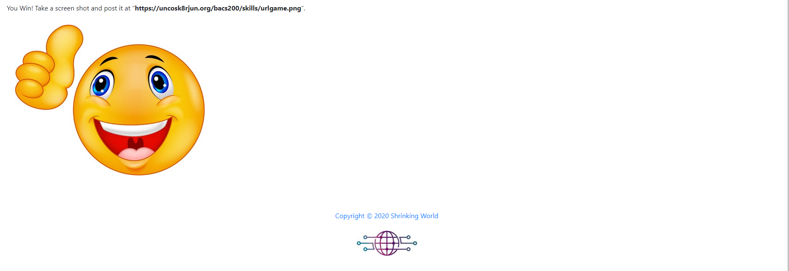

| Screenshots | Descrpctions |
|---|---|
|  |
- Shows that you can login to the Bluehost FTP server. |
|  |
- Shows that your default directories are properly set. |
|  |
- Shows that your files are properly loading locally and remotely on the Bluehost FTP server. |
|  |
- Shows that github repo in my github |
|  |
- Shows that my repo clone in my GithubDesktop application |
|  |
- Show the Advanced tab of the Bluehost control panel |
|  |
- Show the Windows files with your repo |
|  |
- Brackets showing Open Folder |
|  |
- Play the URL game and show the winning view |